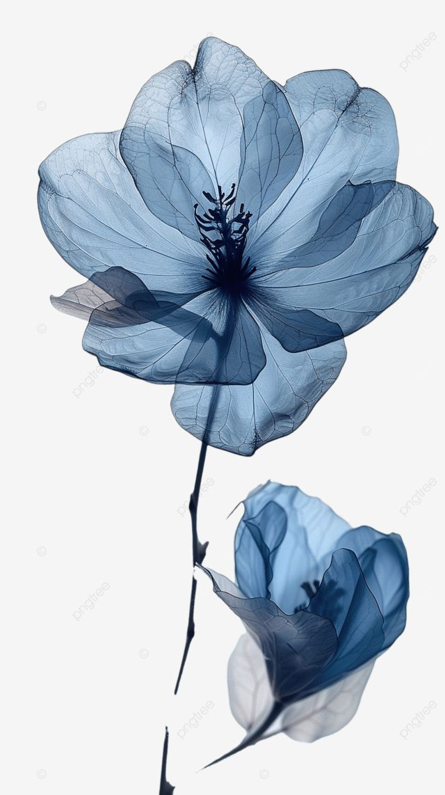

Наша улюблена кінострічка
Історія, яка змушує серце битися швидше
Назарець Ярина та Кітік Вікторія
Ми учениці 10 класу,які створили цей сайт.
Наша мета- поділитися цікавою та корисною інформацією про фільм “Моя вина”,познайомити інших учнів з сюжетом,герпоями та фактами за кадром.
Про героїв
Ноа 17-річна дівчина
Її мати виходить заміж за чоловіка, у якого є син, і саме ці зміни стають серйозним стресом для Ноа. Вона має складні стосунки з новою родиною, і її внутрішня боротьба та взаємодії з іншими героями стають важливими для розвитку сюжету.
Головні герої

Нік
Син чоловіка її матері, з яким Ноа спочатку має напружені стосунки. Але між ними виникає пристрасний і заплутаний роман, який веде до багатьох складних ситуацій. Габріель також не з простого роду, і його особисті проблеми переплітаються з проблемами Ноа.
Персонажі другого плану
Дженна
Накраща подруга Ноа.
Ліон
Найкращий друг Ніка. Виріс разом із ним. Хлопець Дженни.
Фільм розповідає історію Ноа (героїня, яку грає Nicole Wallace), молодої дівчини, чия життя змінюється після серйозної автомобільної аварії, яка призвела до смерті батька. Через цю трагедію вона змушена переїхати жити до нового чоловіка своєї матері, і тепер вона повинна пристосуватися до абсолютно нового життя в чужій родині.
Але найбільша проблема для Ноа — це те, що в її новій родині є Габріель (грає Gabriel Guevara), син чоловіка її матері. Між Ноа та Ніком з самого початку складаються напружені стосунки: вони не хочуть приймати один одного, відчуваючи, що їх зв'язує щось заборонене та дивне. Вони мають повністю різні характери, і хоча між ними є чітка ворожнеча, між ними з часом зароджується справжня пристрасть, яку важко контролювати.
Однак ця любов є забороненою, адже це не просто стосунки між двома людьми, а й взаємини з родинною проблемою. Нік і Ноа намагаються боротися з власними почуттями, і через це їхній зв'язок стає дедалі більш складним і суперечливим.